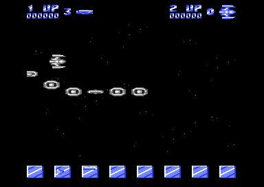

<meta charset="utf-8">
<meta name="viewport" content="width=device-width, initial-scale=1">
<title>{{title}}</title>
<link rel="preconnect" href="https://fonts.googleapis.com">
<link rel="stylesheet" href="https://fonts.googleapis.com/css2?family=Lato:wght@400;700;900&family=IBM+Plex+Mono:wght@400;500&display=swap">
<link rel="stylesheet" href="reference/delta-page.css">
<!-- tabs -->
<header class="hero">
  <p class="eyebrow">{{platform}} · {{year}} · {{publisher}}</p>
  <h1>{{title}}</h1>
  <p class="sub">Stavros Fasoulas drew every bullet in Delta as a letter of an inverted font, and the game finds out who was hit by reading the screen. Rob Hubbard wrote thirteen tunes for it, and the game asks for three.</p>
</header>
<main class="wrap">
<section id="game">
  <p class="fig">01 · The game</p>
  <h2 class="t">A shoot 'em up that sells you its weapons</h2>
  <p>In <i>Delta</i> a small ship flies right through 32 stages of space while attack waves come at it in formation. Shooting every enemy in a wave usually earns a credit. Every so often a wave arrives made of weapon icons instead of enemies: that is the shop, and flying into an icon the player can afford buys it. Flying into one they cannot afford destroys the ship.</p>
  <p>Some stages bring rows of rocks, bubbles or machinery along the top and bottom of the screen, and each one opens with a three-word banner: ENTERING ROCKS OF DEATH, LEAVING CAVES OF ILLUSION. After stage 32 the game says DELTA MISSION COMPLETE and starts again, harder.</p>
  <figure class="overview-shot"><figcaption>Stage 1 in an emulator: the score panel at the top, the first formation, and the seven weapon icons with the credit count along the bottom.</figcaption></figure>
  <p class="overview-links"><a href="mechanics.html">How it works</a><a href="levels.html">The 32 stages</a><a href="waves.html">The attack waves</a><a href="music.html">Music and sound</a><a href="discoveries.html">Discoveries</a></p>
</section>

<section id="makers">
  <p class="fig">02 · The makers</p>
  <h2 class="t">Stavros Fasoulas's second game for Thalamus, with music by Rob Hubbard</h2>
  <p>The title screen says DELTA BY STAVROS FASOULAS and (C)1987 THALAMUS. Fasoulas, a Finnish programmer, wrote Thalamus's first three games: <i>Sanxion</i> (1986), <i>Delta</i> and <i>Quedex</i> (both 1987). Rob Hubbard wrote the music for the first two.</p>
  <p>The tape release opened with Mix-E-Load, a program by Gary Liddon and Rob Hubbard that let the player remix the loading music while the game loaded. In the United States, Electronic Arts published the game as <i>Delta Patrol</i>. <i>Zzap!64</i> gave it 74 %.</p>
  <p class="cap">Sources: <a href="https://en.wikipedia.org/wiki/Delta_(video_game)">Wikipedia, "Delta (video game)"</a>, <a href="https://en.wikipedia.org/wiki/Thalamus_Ltd">Wikipedia, "Thalamus Ltd"</a> and <a href="https://www.mobygames.com/game/14439/delta-patrol/">MobyGames, "Delta Patrol"</a>, as quoted in web search results on 1 and 2 October 2026. The pages themselves could not be opened, so these are second-hand.</p>
</section>

<section id="copy">
  <p class="fig">03 · The copy studied</p>
  <h2 class="t">A cracked single file, with the loader gone</h2>
  <p>These pages describe one program file, a crack by the Reflex Cracking Squad. Its own depacker and intro run first, then two unpacking layers, and the game starts at <code>$1770</code> (<a href="about.html">About</a> has the steps). The crack replaced the original loader, so Mix-E-Load is not in it, and nothing in it says <i>Delta Patrol</i>.</p>
  <p>The game itself fills the whole of the C64's memory, from the sound effects at <code>$0400</code> to the vectors at <code>$FFFA</code>, including the RAM under the I/O chips. Every byte is described on the <a href="source.html">Source code</a> tab.</p>
</section>

<section id="frame">
  <p class="fig">04 · The play screen</p>
  <h2 class="t">One frame, rebuilt from memory</h2>
  <p class="lede">The picture below is drawn by this page from the game's memory and the video chip's registers, recorded over one frame of stage 2.</p>
  <div class="plate">
    <canvas id="frameCv"></canvas>
    <div class="row"><button id="bandsBtn">Show the raster bands</button><span class="lab" id="frameMsg"></span></div>
    <ul class="bands" id="bandList" hidden></ul>
    <p class="cap"><b>Rebuilt with the site's C64 renderer</b> from a frame recorded in VICE: memory as the frame began and every write to the video chip and the sprite pointers, with the raster line it happened on. Compared with VICE's own picture of the same frame, <b>0 pixels differ</b>. The writes listed under the button are the recording's own.</p>
  </div>
  <p>The C64 has eight sprites, and this screen shows far more than eight things that move: two rows of rocks, the enemies, the score panel at the top and eight icons along the bottom. The game reuses the same eight sprites five times a frame. A chain of raster interrupts (<code>$1800</code>, with the next handler's address kept at <code>$1000</code>) wakes up at chosen lines down the screen and moves the sprites, with new shapes and colours, to the next strip before the beam gets there. The main program does almost nothing: <code>main_loop</code> at <code>$17C9</code> waits for line 228 and runs the sound.</p>
  <p>The play area itself is text. The stars, the enemies' fire and all of the player's weapons are characters on the screen at <code>$4400</code>, in a character set of only 64 glyphs at <code>$4800</code>. <a href="mechanics.html">How it works</a> follows that through the game.</p>
</section>

<section id="findings">
  <p class="fig">05 · What the code keeps</p>
  <h2 class="t">A trainer nobody can reach, and random numbers made of code</h2>
  <p>The code holds a cheat routine that nothing calls, a timer cleared at the wrong address, enemy fire whose randomness is read out of the game's own instructions, and a copyright year that the title picture contradicts. The <a href="discoveries.html">Discoveries</a> tab has each one, with the questions still open.</p>
  <p class="cap">No game image is hosted here.</p>
</section>

</main>
<footer style="margin:16px 0 0;padding:22px var(--gx) 0;border-top:1px solid #e0ded8;font-family:'IBM Plex Mono',ui-monospace,Menlo,monospace;font-size:12px;color:#80838a"><a href="/kit.html" style="color:#1f5fa8;text-decoration:none">Kit changelog</a> · <a href="https://github.com/gamesexplained/gamesexplained" style="color:#1f5fa8;text-decoration:none">GitHub</a> · <a href="https://discord.gg/3V9GWyRDWV" style="color:#1f5fa8;text-decoration:none">Discord</a><br>© Games Explained contributors. Write-ups, facts and symbol maps are available under <a href="https://creativecommons.org/licenses/by-sa/4.0/" style="color:#1f5fa8;text-decoration:none">CC BY-SA 4.0</a>; code under <a href="https://opensource.org/licenses/MIT" style="color:#1f5fa8;text-decoration:none">MIT</a></footer>
<script src="../../lib/c64.js"></script>
<script src="reference/delta-page.js"></script>
